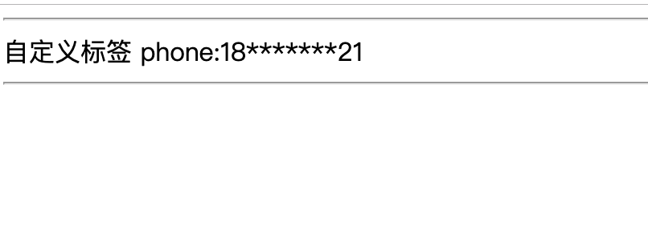

1.9.1. SpringBoot整合Thymeleaf——自定义标签
项目地址: https://github.com/heng1234/springboot2.x/tree/master/boot_thymeleaf
基于上一章节springBoot整合Thymeleaf
thymeleaf 丰富的扩展性为我们实现自定义的标签实现了可能。这里以创建数据脱敏标签这个需求为例，讲解下如何实现自定义的dialect。
需求描述： controller的model中我们有客户的手机号信息："phone": "11111111111"。 按照默认的写法，要在页面中展示手机号，HTML模板为：
<span th:text="${phone}"></span>
如果不使用自定义dialect，这里会将完整的手机号展示出来：
<span>11111111111</span>
接下来我们打算打造一个自定义方言：
<span hlvy:text="${phone}"></span>
实现如下的效果：
<span>11*******11</span>
除了首位2个字符全部替换为星号是自定义dialect的默认行为。除此之外，我们还可以使用正则表达式来定义替换规则。比如，除了前两个字符，其余的全替换为星号：
<p hlvy:text="${phone}" hlvy:pattern="^.{2}(.*)$"></p>
1.9.2. 实现自定义标签处理器
对于Thymeleaf方言，自定义标签的处理逻辑是在标签处理器定义的。
自定义标签处理器需要实现AbstractAttributeTagProcessor 接口，标签的处理逻辑在doProcess 方法中编写。
数据脱敏标签的处理器代码如下所示：
ThSysTagProcessor
import org.thymeleaf.IEngineConfiguration;
import org.thymeleaf.context.ITemplateContext;
import org.thymeleaf.engine.AttributeName;
import org.thymeleaf.model.IAttribute;
import org.thymeleaf.model.IProcessableElementTag;
import org.thymeleaf.processor.element.AbstractAttributeTagProcessor;
import org.thymeleaf.processor.element.IElementTagStructureHandler;
import org.thymeleaf.standard.expression.IStandardExpression;
import org.thymeleaf.standard.expression.IStandardExpressionParser;
import org.thymeleaf.standard.expression.StandardExpressions;
import org.thymeleaf.templatemode.TemplateMode;
import java.util.regex.Matcher;
import java.util.regex.Pattern;
/**
* @author : kaifa
* create at: 2019-10-24 15:53
* @description: 自定义tf标签配置类
*/
public class ThSysTagProcessor extends AbstractAttributeTagProcessor {
private static final String TEXT_ATTRIBUTE = "text";
private static final int PRECEDENCE = 10000;
private static final String PATTERN_ATTRIBUTE = "pattern";
private static final String DEFAULT_PATTERN = "^.{2}(.*).{2}$";
/**
templateMode: 模板模式，这里使用HTML模板。
dialectPrefix: 标签前缀。即xxx:text中的xxx。在此例子中prefix为thSys。
elementName：匹配标签元素名。举例来说如果是div，则我们的自定义标签只能用在div标签中。为null能够匹配所有的标签。
prefixElementName: 标签名是否要求前缀。
attributeName: 自定义标签属性名。这里为text。
prefixAttributeName：属性名是否要求前缀，如果为true，Thymeeleaf会要求使用text属性时必须加上前缀，即thSys:text。
precedence：标签处理的优先级，此处使用和Thymeleaf标准方言相同的优先级。
removeAttribute：标签处理后是否移除自定义属性。*/
public ThSysTagProcessor( String dialectPrefix) {
// 方言名称，前缀，处理优先级
super(TemplateMode.HTML, dialectPrefix, null, false, TEXT_ATTRIBUTE, true, PRECEDENCE, true);
}
@Override
protected void doProcess(ITemplateContext iTemplateContext, IProcessableElementTag iProcessableElementTag, AttributeName attributeName, String s, IElementTagStructureHandler iElementTagStructureHandler) {
//s为自定义属性text的内容，如果s为表达式，该函数可以获取表达式的值
final Object value = getExpressionValue(iTemplateContext, s);
IAttribute patternAttribute = iProcessableElementTag.getAttribute(PATTERN_ATTRIBUTE);
if (null == patternAttribute) {
// 设置标签的内容
iElementTagStructureHandler.setBody(doMasking(value.toString(), DEFAULT_PATTERN), false);
} else {
String patternValue = iProcessableElementTag.getAttribute(PATTERN_ATTRIBUTE).getValue();
iElementTagStructureHandler.setBody(doMasking(value.toString(), patternValue), false);
}
}
private static String doMasking(String target, String patternString) {
Pattern pattern = Pattern.compile(patternString);
Matcher matcher = pattern.matcher(target);
if (matcher.matches()) {
if (matcher.groupCount() < 1) {
return target;
}
String group = matcher.group(1);
StringBuilder stringBuilder = new StringBuilder();
for (int i = 0; i < group.length(); i++) {
stringBuilder.append("*");
}
return target.replace(group, stringBuilder.toString());
}
return target;
}
private Object getExpressionValue(ITemplateContext iTemplateContext, String expressionString) {
final IEngineConfiguration configuration = iTemplateContext.getConfiguration();
final IStandardExpressionParser parser = StandardExpressions.getExpressionParser(configuration);
// 解析expression
final IStandardExpression expression = parser.parseExpression(iTemplateContext, expressionString);
// 获取expression的执行结果
return expression.execute(iTemplateContext);
}
}
1.9.3. 定义方言类
编写好之定义标签的处理器之后，别忘了定义一个方言类。在方言类中，我们需要给出方言的名称，前缀，处理优先级和涉及到的一系列自定义标签处理器。代码如下所示：
ThSysTagProcessor
import org.thymeleaf.dialect.AbstractProcessorDialect;
import org.thymeleaf.processor.IProcessor;
import org.thymeleaf.standard.StandardDialect;
import java.util.HashSet;
import java.util.Set;
/**
* @author : kaifa
* create at: 2019-10-24 16:07
* @description: 定义方言类
*/
public class ThSysDialect extends AbstractProcessorDialect {
private static final String PREFIX = "hlvy";
public ThSysDialect() {
// 方言名称，前缀，处理优先级
super("Tf Hlvy", "hlvy", StandardDialect.PROCESSOR_PRECEDENCE);
}
@Override
public Set<IProcessor> getProcessors(String s) {
// 把所有的自定义tag处理器加入处理器集，这个例子中我们只有这一个自定义处理器
final Set<IProcessor> processorSet = new HashSet<>();
ThSysTagProcessor thSysTagProcessor = new ThSysTagProcessor(PREFIX);
processorSet.add(thSysTagProcessor);
return processorSet;
}
}
注册bean
TfConfig
/**
* @author : kaifa
* create at: 2019-10-24 16:11
* @description: tf bean
*/
@Configuration
public class TfConfig {
@Bean
public ThSysDialect thSysDialect() {
return new ThSysDialect();
}
}
Controller
@RequestMapping("phone.do")
public String toPhone(HttpServletRequest request, String phone, Model model){
model.addAttribute("phone",phone);
return "phone";
}
Phone.html
<!DOCTYPE html>
<html lang="en">
<!--<html xmlns:th="http://www.thymeleaf.org"> 这可以省略-->
<head>
<meta charset="UTF-8">
<title>Title</title>
</head>
<body>
<div>
<hr/>
自定义标签 phone:<span hlvy:text="${phone}"></span>
<hr/>
</div>
</body>
</html>
测试
http://localhost:7004/tf/phone.do?phone=18616283921
